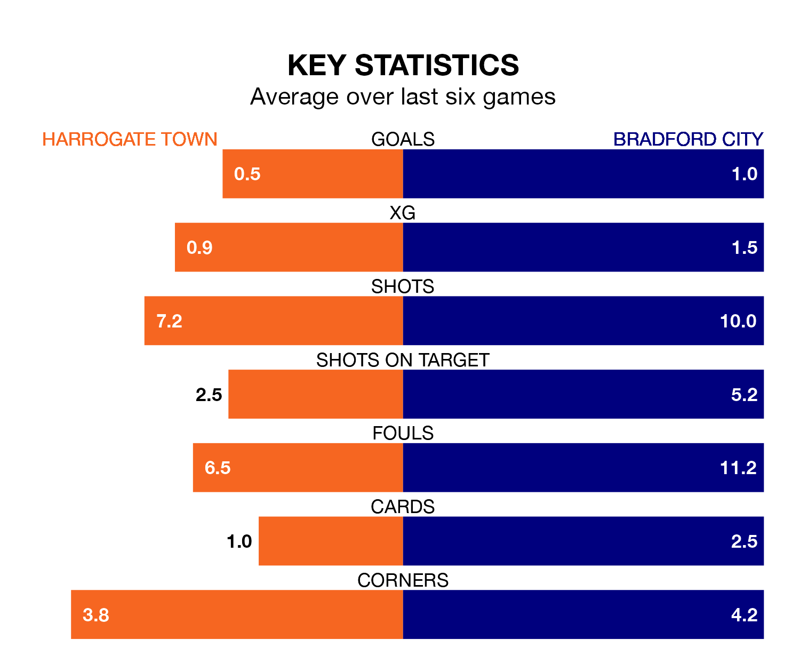

Bradford City are strong favourites to take all three points despite Harrogate Town's home advantage in Saturday lunchtime's match at the EnviroVent Stadium.
*Betting Company* are offering odds of 1.92 on Bradford sealing the win, with the visitors sitting 17th in EFL League Two table.
Harrogate, despite being 14th in the league and one point ahead of the Bantams, are priced at 3.53 to win. A draw is set at 3.16.
Harrogate are in bad form in EFL League Two, with no wins and three draws from their last six games.
With two wins and a draw over that period, Bradford's form is better – they have taken seven points from 18, compared to Town's three.
In the last 10 years, Harrogate and Bradford have played each other on eight occasions. Harrogate won five of them, Bradford two, and they drew once.
On average, Harrogate scored 1.4 goals and the Bantams 0.8 in those matches.
Their last meeting was on September 16, when they played out a 1-1 draw.
The hosts' Matty Daly is among the league's most creative players, racking up nine assists in 32 appearances so far this season, and holding third spot in EFL League Two's assist charts.
For City, Andy Cook has set up the most goals, having laid on five assists in 35 games.
With 43 goals in 38 games so far this season, Harrogate are scoring at below the league average rate with 1.1 goals per game. But they are conceding fewer than average too, letting in 55 goals at a rate of 1.4 per game.
The Bantams are also below average scorers, with 1.2 goals per game, compared to a league average of 1.5. They have conceded 1.3 goals per game.
Harrogate's last match was on Saturday, a 0-0 draw against Barrow.
Bradford lost 3-0 against Notts County last time out, on Tuesday.
Updated: 10:19 (UTC), 22/03/24